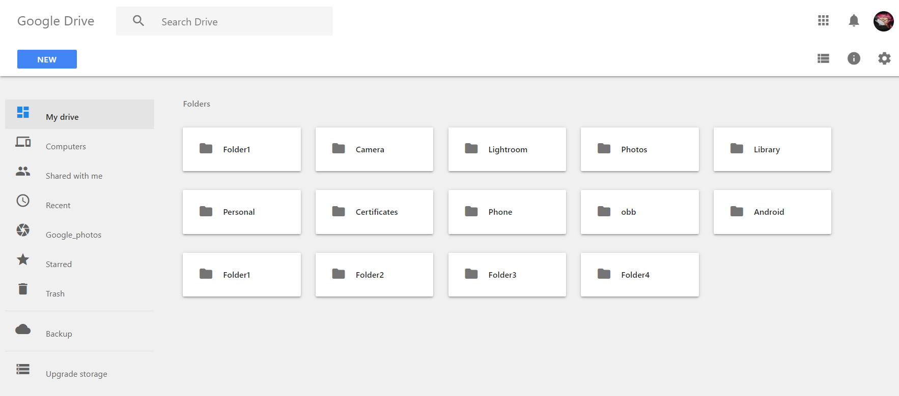

JOYAL GIGI

DOB: 02/04/2002
Contact me
Objective:
Always seeking for an innovative and challenging career
in a professionally managed and dynamic organization, which
provides the best opportunities for development and greater
responsibilities to contribute towards the organization.
EDUCATION
Bachelor of Technology in Electronics and Communication Engineering
|Expected Graduation: 2024|Federal Institute of Science And Technology[FISAT], Ernakulam, Kerala|Current CGPA: 8.6712th
|Sree Narayana Higher Secondary School[SNHSS], Okkal, Ernakulam, Kerala|Aggregate marks:96.7%10th
|Anita Vidyalaya Higher Secondary School[AVHSS]Ernakulam, Kerala|Aggregate marks: 99%
PROJECTS
Google Drive clone website
Developed a clone website of Google drive using HTML and Material CSS. The platform used to develop was Code Sandbox.
Obstacle avoiding and line following robot
Build an Autonomous Mobile Vehicle (AMV) using Arduino as the main chip. The AMV was designed to follow a track and avoid any obstacles in the track.
SKILLS
TECHNICAL SKILLS
Programming Languages:
C, PYTHON, HTML, SCILAB- Web Development
- Circuit design and analysis
Familiar Tools:
VS CODE, GITHUB, MATLAB, MS office etc...
INTERPERSONAL SKILLS
- Communication
- Adaptability
- Team player
- Hardworking
- Excellent learning and observation skills
ACHIEVMENTS
- Secured first prize in SCILAB coding competition conducted by ECHO FISAT
- Secured first prize in Technical writing competition conducted by ECHO FISAT
COURSES COMPLETED
- Crash course on python by Google
- Bootcamp on "Python and deep learning" by Shape AI
- Bootcamp on "Web development using HTML and Material CSS" by Shape AI
- Add on course on Excel programming
- NPTEL course on "Body language for professional success"
INTERESTS
- Full Stack Development
- Machine Learning
- Artificial Intelligence
- Robotics
Click here to see my Hobbies
© Joyal Gigi. All rights reserved.